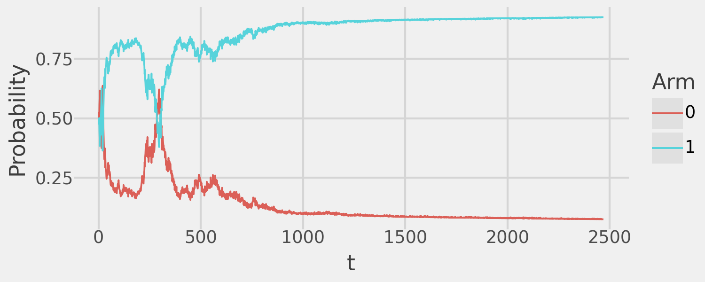
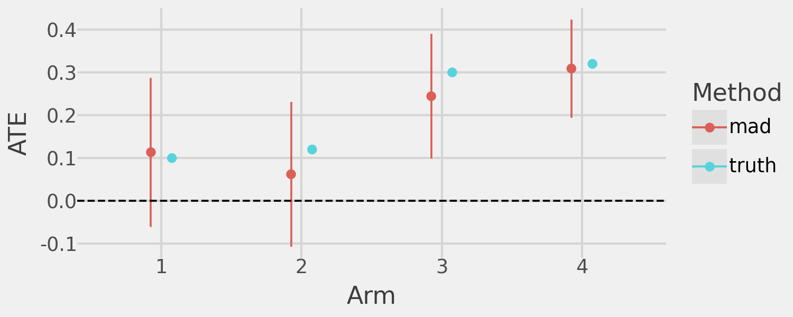
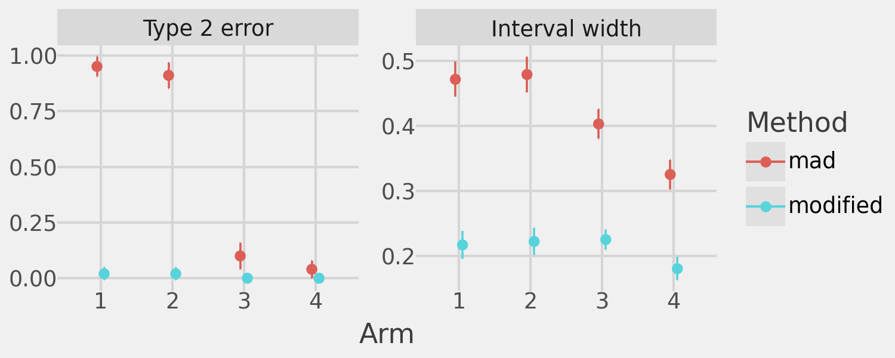

Show the code
import joblib
import numpy as np
import pandas as pd
import plotnine as pn
from scipy.stats import t
from tqdm import tqdm
from src.bandit import TSBernoulli
from src.mad import MAD, MADModified
from src.utils import lastExploring the MAD design (Liang and Bojinov, 2024) and extending it to balance anytime-valid inference, reward maximization, and statistical power in adaptive experiments.
Recently I’ve been thinking about how to design adaptive experiments that enable valid inference on treatment effects while maintaining sufficient power to detect nonzero effects across treatment arms (including sub-optimal arms). To explore this, I will run simulations demonstrating how we can achieve these goals. Specifically, I extend the Mixture Adaptive Design (MAD) (Liang & Bojinov, 2024) to produce an adaptive experiment with the following properties:
import joblib
import numpy as np
import pandas as pd
import plotnine as pn
from scipy.stats import t
from tqdm import tqdm
from src.bandit import TSBernoulli
from src.mad import MAD, MADModified
from src.utils import lastThe MAD combines Bernoulli randomization with arbitrary multi-armed bandit (MAB) algorithms, enabling unbiased ATE estimation with anytime-valid confidence sequences (CSs).
To illustrate its usefulness, consider a simple experiment with one control and one treatment arm. Outcomes are sampled as follows:
We use Thompson Sampling (TS) as the bandit algorithm and stop the experiment as soon as the ATE reaches statistical significance.
generator = np.random.default_rng(seed=123)
def reward_fn(arm: int) -> float:
values = {
0: generator.binomial(1, 0.5),
1: generator.binomial(1, 0.6) # ATE = 0.1
}
return values[arm]
exp_simple = MAD(
bandit=TSBernoulli(k=2, control=0, reward=reward_fn),
alpha=0.05,
delta=lambda x: 1./(x**0.24),
t_star=int(30e3)
)
exp_simple.fit(cs_precision=0, verbose=False)Finally, we plot the MAD-estimated ATE over time, showing convergence to the true effect and demonstrating that the corresponding 95% CSs maintain valid coverage.
(
exp_simple.plot_ate_path()
+ pn.coord_cartesian(ylim=(-.5, 1.5))
+ pn.geom_hline(
mapping=pn.aes(yintercept="ate", color="factor(arm)"),
data=pd.DataFrame({"arm": list(range(1, 2)), "ate": [0.1]}),
linetype="dotted"
)
+ pn.theme(strip_text=pn.element_blank())
)The underlying bandit algorithm provides additional benefits. Below, we show the total sample size assigned to both arms of the experiment:
exp_simple.plot_n()and the arm assignment probability over time:
exp_simple.plot_probabilities()
The TS algorithm assigns the majority of the sample to the optimal arm (Arm 1 is the treatment). This demonstrates how we can achieve both valid ATE inference and reward maximization with the bandit algorithm.
In adaptive experiments with multiple treatment arms, a common issue is being under-powered to detect non-zero ATEs in sub-optimal arms. This happens because the bandit algorithm allocates most of the sample to the optimal arm(s), neglecting the others.
We demonstrate this with an experiment simulating a control arm and four treatment arms with ATEs of 0.1, 0.12, 0.3, and 0.32, respectively, over a fixed sample size of 20,000. We expect the bandit algorithm to allocate most of the sample to arms 3 and 4, leaving arms 1 and 2 under-powered.
def reward_fn(arm: int) -> float:
values = {
0: generator.binomial(1, 0.5), # Control arm
1: generator.binomial(1, 0.6), # ATE = 0.1
2: generator.binomial(1, 0.62), # ATE = 0.12
3: generator.binomial(1, 0.8), # ATE = 0.3
4: generator.binomial(1, 0.82) # ATE = 0.32
}
return values[arm]
exp_complex = MAD(
bandit=TSBernoulli(k=5, control=0, reward=reward_fn),
alpha=0.05,
delta=lambda x: 1./(x**0.24),
t_star=int(20e3)
)
exp_complex.fit(early_stopping=False, verbose=False)
ates = pd.concat(
[
exp_complex.estimates().assign(which="mad"),
pd.DataFrame({
"arm": list(range(1, 5)),
"ate": [0.1, 0.12, 0.3, 0.32],
"which": ["truth"]*(4)
})
],
axis=0
)
(
pn.ggplot(
ates,
mapping=pn.aes(
x="factor(arm)",
y="ate",
ymin="lb",
ymax="ub",
color="which"
)
)
+ pn.geom_point(position=pn.position_dodge(width=0.3))
+ pn.geom_errorbar(position=pn.position_dodge(width=0.3), width=0.001)
+ pn.geom_hline(yintercept=0, linetype="dashed", color="black")
+ pn.theme_538()
+ pn.labs(x="Arm", y="ATE", color="Method")
)
As anticipated, we observe strong ATE estimates for arms 3 and 4 but under-powered estimates for arms 1 and 2 (CSs include 0). We can confirm that, indeed, TS focuses the majority of the sample on arms 3 and 4 to the detriment of power in our experiment.
exp_complex.plot_n()I propose an extension of the MAD algorithm to address the challenge of inadequate power in sub-optimal arms. For each treatment arm \(k \in K\) and time period \(t\), I introduce importance weights \(w_{tk} \in [0, 1]\). Once the estimated ATE for arm \(k\) becomes statistically significant, \(w_{tk}\) begins to shrink toward zero according to a user-defined function of \(t\).
In the notation of Liang and Bojinov, let \(A\) represent an arbitrary adaptive algorithm. They define \(p_t^A(k)\) as the assignment probability for arm \(k\) at time \(t\) under \(A\). By construction, the set \(p_t^A(k)\) of adaptive assignment probabilities for all \(k \in K\) forms a valid probability distribution over \(K\), meaning \(\sum_{k \in K}{p_t^A(k)}=1\). I modify these probabilities to \(g(p_t^A(k))\) where \(g\) re-weights \(p_t^A(k)\) based on the importance weight \(w_{tk}\).
For each treatment arm \(k \in K\) at time \(t\), the re-weighted probability \(g(p_t^A(k))\) is computed as follows:
1.) Apply Importance Weights: Each probability is first scaled by its importance weight: \[p_t^*(k)=w_{tk}*p_t^A(k).\]
2.) Compute Lost Probability Mass: The probability mass lost due to down-weighting is: \[L_t = \sum_{k \in K}{p_t^A(k)*(1 - w_{tk})}.\]
3.) Compute Relative Redistribution Weights: The total weight sum is: \[W_t = \sum_{k \in K}{w_{tk}}.\] Each arm’s share of the remaining mass is: \[r_{tk} = \frac{w_{tk}}{W_t}.\]
4.) Redistribute Lost Mass: Redistribute the lost mass proportionally to the relative weights: \[p_t^g(k) = p_t^*(k) + (r_{tk} * L_t).\]
5.) Normalization Check: Since \(p_t^g(k)\) for all \(k \in K\) forms a valid probability distribution over \(K\), it satisfies: \[\sum_{k \in K}p_t^g(k)=1.\]
Thus, the function \(g\) modifies the original assignment probabilities by scaling each by its importance weight and redistributing the lost probability mass in a manner that preserves the total probability sum.
The importance weight function \(w_{tk}\) controls how quickly the assignment probability for arm \(k\) shrinks once its estimated ATE becomes statistically significant. This user-defined function balances two extremes:
Reasonable choices for \(w_{tk}\) include polynomial or exponential decay, providing flexibility in tuning sample reallocation.
I compare the two algorithms to highlight the benefits of the modified approach. The modified algorithm significantly improves power to detect non-zero ATEs in all treatment arms and provides more precise ATE estimates than the original MAD algorithm with the same sample size. However, this comes at the cost of assigning more sample to sub-optimal arms, where “optimal” is defined by the underlying bandit algorithm.
The following plots demonstrate the increased power and precision of the modified MAD algorithm.
# Run the modified algorithm
mad_modified = MADModified(
bandit=TSBernoulli(k=5, control=0, reward=reward_fn),
alpha=0.05,
delta=lambda x: 1./(x**0.24),
t_star=int(20e3),
decay=lambda x: 1./(x**(1./8.))
)
mad_modified.fit(cs_precision=0.1, verbose=False, early_stopping=True)
# Run the vanilla algorithm
mad_vanilla = MAD(
bandit=TSBernoulli(k=5, control=0, reward=reward_fn),
alpha=0.05,
delta=lambda x: 1./(x**0.24),
t_star=mad_modified._bandit._t
)
mad_vanilla.fit(verbose=False, early_stopping=False)
# Compare the ATEs and CSs
ates = pd.concat(
[
mad_modified.estimates().assign(which="MADMod"),
mad_vanilla.estimates().assign(which="MAD"),
pd.DataFrame({
"arm": list(range(1, 5)),
"ate": [0.1, 0.12, 0.3, 0.32],
"which": ["Truth"]*(4)
})
],
axis=0
)
(
pn.ggplot(
ates,
mapping=pn.aes(
x="factor(arm)",
y="ate",
ymin="lb",
ymax="ub",
color="which"
)
)
+ pn.geom_point(position=pn.position_dodge(width=0.3))
+ pn.geom_errorbar(position=pn.position_dodge(width=0.3), width=0.001)
+ pn.geom_hline(yintercept=0, linetype="dashed", color="black")
+ pn.theme_538()
+ pn.labs(x="Arm", y="ATE", color="Method")
)And the following plot compares the sample assignment to the treatment arms of the two algorithms:
sample_sizes = pd.concat([
pd.DataFrame(x) for x in
[
{
"arm": [k for k in range(len(mad_modified._ate))],
"n": [last(n) for n in mad_modified._n],
"which": ["MADMod"]*len(mad_modified._ate)
},
{
"arm": [k for k in range(len(mad_vanilla._ate))],
"n": [last(n) for n in mad_vanilla._n],
"which": ["MAD"]*len(mad_vanilla._ate)
}
]
])
(
pn.ggplot(sample_sizes, pn.aes(x="factor(arm)", y="n", fill="which", color="which"))
+ pn.geom_bar(stat="identity", position=pn.position_dodge(width=0.75), width=0.7)
+ pn.theme_538()
+ pn.labs(x="Arm", y="N", color="Method", fill="Method")
)
We can more precisely quantify the improvements by running 1,000 simulations, comparing Type 2 error and confidence band width between the vanilla MAD algorithm and the modified algorithm. Each simulation runs for 20,000 iterations with early stopping. If the modified algorithm stops early, the vanilla algorithm will also stop early to maintain equal sample sizes in each simulation.
def delta_fn(x):
return 1. / (x ** 0.24)
def decay_fn(x):
return 1. / (x ** (1. / 8.))
def compare(i):
mad_modified = MADModified(
bandit=TSBernoulli(k=5, control=0, reward=reward_fn),
alpha=0.05,
delta=delta_fn,
t_star=int(2e4),
decay=decay_fn
)
mad_modified.fit(cs_precision=0.1, verbose=False, early_stopping=True)
# Run the vanilla algorithm
mad_vanilla = MAD(
bandit=TSBernoulli(k=5, control=0, reward=reward_fn),
alpha=0.05,
delta=delta_fn,
t_star=mad_modified._bandit._t
)
mad_vanilla.fit(verbose=False, early_stopping=False)
# Calculate the Type 2 error and the Confidence Sequence width
## For modified algorithm
mad_mod_n = (
pd
.DataFrame([
{"arm": k, "n": last(mad_modified._n[k])}
for k in range(mad_modified._bandit.k())
if k != mad_modified._bandit.control()
])
.assign(
n_pct=lambda x: x["n"].apply(lambda y: y/np.sum(x["n"]))
)
)
mad_mod_df = (
mad_modified
.estimates()
.assign(
idx=i,
method="modified",
width=lambda x: x["ub"] - x["lb"],
error=lambda x: ((0 > x["lb"]) & (0 < x["ub"]))
)
.merge(mad_mod_n, on="arm", how="left")
)
## For vanilla algorithm
mad_van_n = (
pd
.DataFrame([
{"arm": k, "n": last(mad_vanilla._n[k])}
for k in range(mad_vanilla._bandit.k())
if k != mad_vanilla._bandit.control()
])
.assign(
n_pct=lambda x: x["n"].apply(lambda y: y/np.sum(x["n"]))
)
)
mad_van_df = (
mad_vanilla
.estimates()
.assign(
idx=i,
method="mad",
width=lambda x: x["ub"] - x["lb"],
error=lambda x: ((0 > x["lb"]) & (0 < x["ub"]))
)
.merge(mad_van_n, on="arm", how="left")
)
out = {
"metrics": pd.concat([mad_mod_df, mad_van_df]),
"reward": {
"modified": np.sum(mad_modified._rewards),
"mad": np.sum(mad_vanilla._rewards)
}
}
return out
# Execute in parallel with joblib
comparison_results_list = [
x for x in
joblib.Parallel(return_as="generator", n_jobs=-1)(
joblib.delayed(compare)(i) for i in range(100)
)
]
# Compare performance on key metrics across simulations
metrics_df = pd.melt(
(
pd
.concat([x["metrics"] for x in comparison_results_list])
.reset_index(drop=True)
.assign(error=lambda x: x["error"].apply(lambda y: int(y)))
),
id_vars=["arm", "method"],
value_vars=["width", "error", "n", "n_pct"],
var_name="meas",
value_name="value"
)
# Compare reward accumulation across simulations
reward_df = pd.melt(
pd.DataFrame([x["reward"] for x in comparison_results_list]),
value_vars=["modified", "mad"],
var_name="method",
value_name="reward"
)
metrics_summary = (
metrics_df
.groupby(["arm", "method", "meas"], as_index=False).agg(
mean=("value", "mean"),
std=("value", "std"),
n=("value", "count")
)
.assign(
se=lambda x: x["std"] / np.sqrt(x["n"]),
t_val=lambda x: t.ppf(0.975, x["n"] - 1),
ub=lambda x: x["mean"] + x["t_val"] * x["se"],
lb=lambda x: x["mean"] - x["t_val"] * x["se"]
)
.drop(columns=["se", "t_val"])
)The following plot shows the mean (and 95% confidence intervals) of the Type 2 error and CS width for both algorithms.
facet_labels = {
"error": "Type 2 error",
"width": "Interval width",
"n": "Sample size",
"n_pct": "Sample size %"
}
(
pn.ggplot(
metrics_summary[metrics_summary["meas"].isin(["error", "width"])],
pn.aes(
x="factor(arm)",
y="mean",
ymin="lb",
ymax="ub",
color="method"
)
)
+ pn.geom_point(position=pn.position_dodge(width=0.2))
+ pn.geom_errorbar(position=pn.position_dodge(width=0.2), width=0.01)
+ pn.facet_wrap(
"~ meas",
labeller=lambda x: facet_labels[x],
scales="free"
)
+ pn.theme_538()
+ pn.labs(x="Arm", y="", color="Method")
)
The modified MAD algorithm achieves far lower Type 2 error and improved ATE precision in all treatment arms.
These plots illustrate the tradeoffs of the modified algorithm. On average, it allocates significantly more sample to sub-optimal arms compared to the standard MAD algorithm.
(
pn.ggplot(
metrics_summary[metrics_summary["meas"].isin(["n", "n_pct"])],
pn.aes(
x="factor(arm)",
y="mean",
ymin="lb",
ymax="ub",
color="method"
)
)
+ pn.geom_point(position=pn.position_dodge(width=0.2))
+ pn.geom_errorbar(position=pn.position_dodge(width=0.2), width=0.01)
+ pn.facet_wrap(
"~ meas",
labeller=lambda x: facet_labels[x],
scales="free"
)
+ pn.theme_538()
+ pn.labs(x="Arm", y="", color="Method")
)As a result, this reallocation reduces total reward accumulation. The difference in accumulated reward across the 1,000 simulations is shown below:
(
pn.ggplot(reward_df, pn.aes(x="method", y="reward"))
+ pn.geom_boxplot()
+ pn.theme_538()
+ pn.labs(x="Method", y="Cumulative reward")
)In summary, this approach allows us to achieve anytime-valid inference on the ATE, enabling early stopping for greater flexibility and efficiency. It also allows us to ensure dynamic sample allocation, guaranteeing sufficient power for all (or the top n) treatment arms.